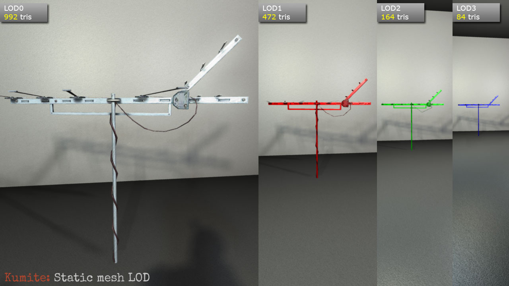

Level of detail support in Kumite engine
========================================
LODs are supported at different levels: static meshes, skeletal meshes (WIP), hierarchical
LODs for entire maps (planned).
Static meshes (mapmodels)
=========================
To employ the LOD support model must contain several submeshes. Each submesh belongs to
one of LOD groups. Only one such group is visible at any moment of time. Number of LOD
groups is not limited, as well as number of meshes within the group. Meshes may not
belong to multiple groups (this may change in the future). Visible LOD group is selected
based on the approximate screen size of object (bounding sphere radius is used as object's
world size).
## Model setup - Wavefront OBJ
When exporting the model from DCC tool all LODs must be combined together into one scene
and exported simultaneously. This is how typical exported .obj file should look like:
~~~~ sh
# LOD3 vertex,normal,UV data
v -1.6948 114.4253 80.5524
...
vn 1.0000 0.0000 -0.0000
...
vt 0.2515 0.0269 0.0000
...
# Group becomes LOD name
g Antenna_LOD3
# Material becomes mesh name
usemtl Antenna_Inst
# Faces/triangles
s 1
f 1/1/1 2/2/1 3/3/1
...
# Next LOD definition
v -4.0338 114.4253 80.5524
...
vn 0.0000 -1.0000 -0.0000
...
vt 0.3174 0.0269 0.0000
...
g Antenna_LOD2
usemtl Antenna_Inst
s 1
f 145/77/31 146/78/31 147/79/31
...
~~~~
## Configuration
Engine executes configuration files to properly load and configure models.
~~~~ C
// Geometry
objload Antenna.obj
mdlscale 16
// Materials
objskin Antenna_Inst Antenna_D.jpg
objbumpmap Antenna_Inst Antenna_N.jpg
// LOD
// define LOD groups
mdllod 1.5
mdllod 1
mdllod 0.7
mdllod 0.2
mdllodthreshold 0.1
mdllodshadowoffset 1
// assign meshes to groups
objmeshlod Antenna_LOD0 0
objmeshlod Antenna_LOD1 1
objmeshlod Antenna_LOD2 2
objmeshlod Antenna_LOD3 3
// colorify LODs for clarity
objcolor Antenna_LOD1.Antenna_Inst 1 0 0 // LOD1 - red
objcolor Antenna_LOD2.Antenna_Inst 0 1 0 // LOD2 - green
objcolor Antenna_LOD3.Antenna_Inst 0 0 1 // LOD3 - blue
~~~~
## Result

## Configuration reference
### mdllod metric
This command adds new LOD group and defines the approximate screen size metric for it.
Metric of 1 means that bounding sphere of model will cover almost all the screen so
this LOD group will be selected when current object's metric is **greater** than this
value.
### mdllodthreshold threshold
This is used to prevent flipping between neighbour LOD groups when metric is near the
border value.
### mdlshadowoffset offset
What LOD to use to render model's shadow relative to currently selected LOD level.
0 means "use current LOD", 1 - "use next coarser LOD", -1 - "use next finer LOD" etc.
One could use high enough value to "stick" shadow to always use the lowest LOD of
all possible.
### (obj | iqm)meshlod meshLODName LODGroup
Assign meshes to one of LOD levels. Meshes may be defined in arbitrary order in OBJ
or IQM file, so we need to set correct LOD group for them.
### Mesh identification
Fully qualified name for mesh is "(meshLODName).(meshName)". Some commands like
**objcolor**, **objskin** etc need the mesh name to be specified. So far the following
variants are supported:
* "*" - any mesh, command will be applied to all submeshes of model
* meshName - command will be applied to any mesh named "mesName" regardless of it's LOD
* meshLODName.meshName - command will be applied to specific mesh in specific LOD group.
This allows to have different settings for different LODs (like colors in the example
above), use cheaper shaders on far away LODs etc.
Skeletal models
===============
## Mesh LOD
TBD
## Skeleton LOD
TBD
## Animation LOD
TBD
## Model setup - IQM
TBD
## Result

## Configuration reference
TBD
Hierarchical LOD
================
## Grouping
TBD
## Auto billboards generation
TBD